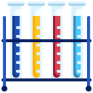

Home › Workshops & Clubs
Not every student needs a tutor. Some need a reason to like the subject again. STEM workshops, after-school clubs and holiday clubs — run by a former Head of Science who has spent twenty years working out which demonstrations make a room go quiet.
Each one is built for a different group and a different amount of time. Tell me which fits and we can shape it from there.
One-off, hands-on sessions for a class, a year group or a community group. Practical science with a proper question behind it — not a magic show with no explanation.

A regular weekly science club through term time. Somewhere the students who love the subject get stretched and the ones who have gone quiet get pulled back in.
Half-term and school-holiday sessions. Longer blocks mean the messier, more memorable experiments that never fit into a single lesson.
Get a student genuinely interested and the revision problem mostly solves itself.
Every session starts with something that does not obviously make sense. The explanation lands harder when a student has already wondered about it.
Measuring properly, recording honestly, and saying what the result actually shows — the habits the required practicals are testing anyway.
Twenty years in front of classes means knowing when to step in and when to let a group struggle productively for another two minutes.
The important thing is to never stop questioning.
Albert Einstein
Workshops and clubs get shaped around the group, so the details are worth a conversation rather than a price list. When you get in touch, it helps to know:
Rod comes back on availability, what a session would look like, and cost for your group. Schools, PTAs, scout and guide groups, home-education networks and community groups are all welcome to ask.